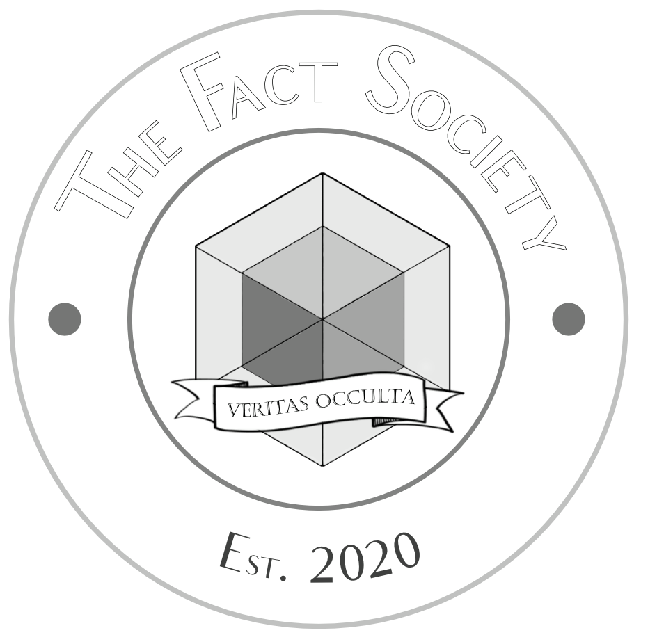

Fact Society
Groundbreaking Start-Up Offers Mitochondria Transfusions for Enhanced Endurance
Harvey Stutt
August 27, 2022, 7:14p.m. ET
SAN FRANCISCO, CA - In a bold leap at the intersection of biotechnology and high-altitude physiology, tech entrepreneur Eric Planton unveiled his latest venture, Everbest, at a high-profile event held yesterday at the San Francisco Tech Hub. The start-up promises to revolutionize human performance and health with an innovative offering: mitochondria transfusions sourced from Nepalese Sherpas.
The announcement was made amidst much fanfare, with Planton revealing that Everbest has already secured $50 million in Series A funding from prominent venture capital firms that the company chose not to disclose. This substantial investment underscores the confidence that the tech and biotech communities have in Planton's vision.
Mitochondria are often referred to as the powerhouses of cells, generating the energy that cells need to function. Sherpas, native to the Himalayan region, have long been noted for their extraordinary ability to thrive at high altitudes where oxygen levels are significantly lower. Recent scientific research has shown that the mitochondria of Sherpas are uniquely adapted to high-altitude conditions, making them more efficient at producing energy under these challenging circumstances.
Planton, known for his previous ventures in artificial intelligence and fintech, shared a personal connection to the project. "My own struggles with maintaining performance during high-altitude treks in the Himalayas inspired me to explore this field," he said. "Seeing the incredible natural endurance of Sherpas firsthand made me wonder how we could harness this capability for everyone."
The company claims that a single Sherpa mitochondria transfusion can bring about a plethora of health benefits from muscle growth to improved lung health.
Addressing potential ethical concerns, Planton assured the audience that Everbest's approach is both sustainable and respectful of the Sherpa community. "We have established a fair and ethical partnership with the Sherpas, ensuring they benefit directly from the commercial success of this venture," Planton stated. "Our procedures are non-invasive and designed to have minimal impact on the donors."
Everbest is set to begin clinical trials in the coming months, with an anticipated market release within the next two years. The company aims to cater to a broad range of clients, from elite athletes and mountaineers to individuals seeking improved general health and longevity.
The future of human performance enhancement is here, and it appears to be powered by the resilient mitochondria of the Himalayan Sherpas. As Eric Planton's Everbest prepares to make its mark, the world watches in anticipation of a new era in biotechnology and wellness.
The announcement was made amidst much fanfare, with Planton revealing that Everbest has already secured $50 million in Series A funding from prominent venture capital firms that the company chose not to disclose. This substantial investment underscores the confidence that the tech and biotech communities have in Planton's vision.
Sherpas, native to the Himalayan region, have long been noted for their extraordinary ability to thrive at high altitudes where oxygen levels are significantly lower.
Mitochondria are often referred to as the powerhouses of cells, generating the energy that cells need to function. Sherpas, native to the Himalayan region, have long been noted for their extraordinary ability to thrive at high altitudes where oxygen levels are significantly lower. Recent scientific research has shown that the mitochondria of Sherpas are uniquely adapted to high-altitude conditions, making them more efficient at producing energy under these challenging circumstances.
Planton, known for his previous ventures in artificial intelligence and fintech, shared a personal connection to the project. "My own struggles with maintaining performance during high-altitude treks in the Himalayas inspired me to explore this field," he said. "Seeing the incredible natural endurance of Sherpas firsthand made me wonder how we could harness this capability for everyone."
The company claims that a single Sherpa mitochondria transfusion can bring about a plethora of health benefits from muscle growth to improved lung health.
Addressing potential ethical concerns, Planton assured the audience that Everbest's approach is both sustainable and respectful of the Sherpa community. "We have established a fair and ethical partnership with the Sherpas, ensuring they benefit directly from the commercial success of this venture," Planton stated. "Our procedures are non-invasive and designed to have minimal impact on the donors."
Everbest is set to begin clinical trials in the coming months, with an anticipated market release within the next two years. The company aims to cater to a broad range of clients, from elite athletes and mountaineers to individuals seeking improved general health and longevity.
The future of human performance enhancement is here, and it appears to be powered by the resilient mitochondria of the Himalayan Sherpas. As Eric Planton's Everbest prepares to make its mark, the world watches in anticipation of a new era in biotechnology and wellness.
Harvey Stutt is a veteran journalist and The Fact Society's longest tenured news staff member.